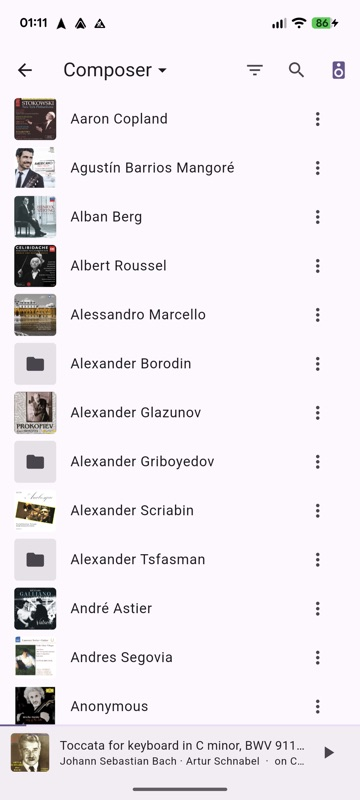
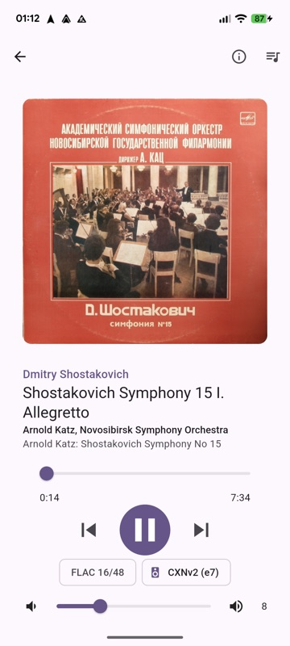
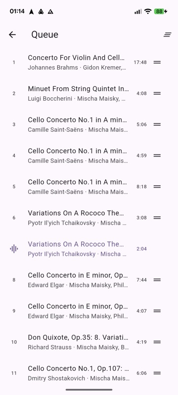
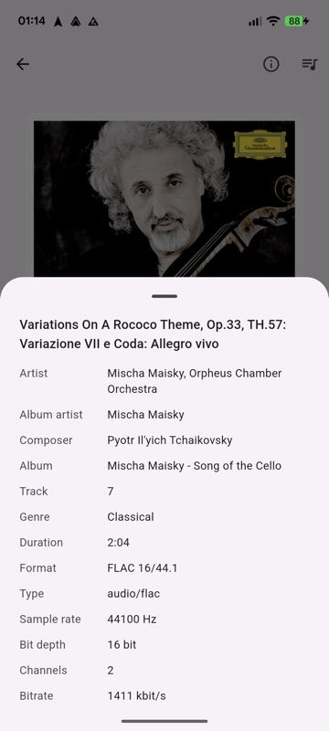
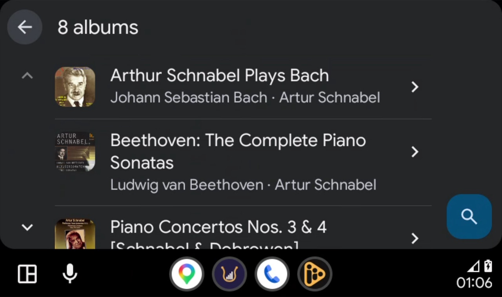
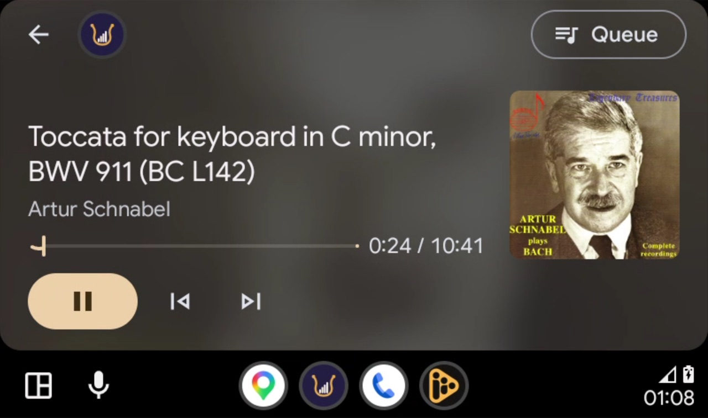
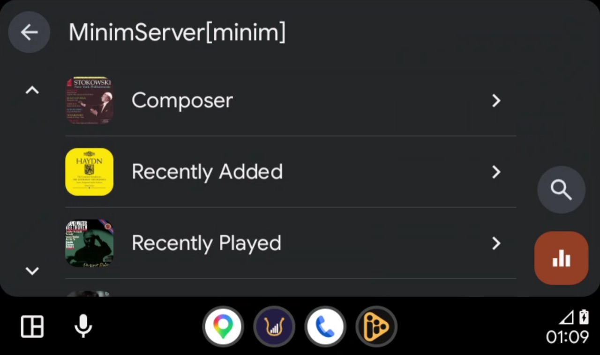

Guide
Using the app
Minstrel is a UPnP/DLNA control point: it finds the media servers on your network, lets you browse them, and plays what you pick, either on the phone itself or on a network player such as a streamer, an amplifier or a smart speaker. Nothing to install at home besides the media server you already have.
1. Install
- iPhone: Minstrel Media Player on the App Store.
- Android: on Google Play, in closed testing for now. Ask for an invitation in Discussions or at support@minstrelplayer.org, and say which Google account the phone uses — Play can only let that account in. That address is used for one thing, once: adding you to the tester list. Not a mailing list, not shared, not used for anything else, and it comes off the list whenever you ask. It goes public once there are enough testers, and this page will carry the plain link then.
Developers can also build it from the source on GitHub with Flutter.
2. First start
Connect the phone to the same Wi-Fi as your media server and open Minstrel.
- iPhone: allow Local Network access when asked. Without it iOS hides your network from the app. To change it later: Settings → Privacy & Security → Local Network → Minstrel.
- Android: allow notifications if asked, so playback controls appear on the lock screen.
The main screen lists what Minstrel found by itself:
- Music servers: MinimServer, MiniDLNA, Jellyfin, Plex, Serviio, Asset, a NAS's own DLNA server and so on.
- Play on: network players that accept UPnP/DLNA or OpenHome, such as streamers and many amplifiers and speakers.
Pull down to search again. Servers and players appear within a few seconds.
3. Browse and play on the phone
- Tap a server. You see its own menu: folders, albums, artists, genres, whatever the server offers.
- Tap a track to play the album from that track, or use Play all. The ⋮ menu has Play next and Add to queue.
- The bar at the bottom shows what's playing; tap it for the full player and the Queue.
Playback continues with the screen off and from the lock screen, headphones and Bluetooth controls. The queue is kept when you close the app.








4. Play on a network player
- Tap the speaker button (Play on) in the player or the top bar.
- Choose a player. The queue and position move to it; the music now streams from the server straight to the player, and the phone is only the remote.
- To bring it back, choose This device.
If you open Minstrel later, or on another phone, it picks up what the player is playing.
While a player plays, the lock screen has its controls. Some players only take one track at a time; for those, Minstrel feeds the next track itself, in the background too. On iPhone, Minstrel plays silence while a player plays to do both, so starting a player stops other audio on the phone, as playing music in any app does.
Settings
- Quality: Best available plays the original files, lossless where the player supports it. Data saver picks the smallest version the server already offers.
- Away from home: Original quality, or have your launchpad compress lossless files to AAC (320, 256, 192 or 128 kbit/s) to save mobile data. The conversion happens on the launchpad at home, which needs ffmpeg installed; players and music at home always get the original.
In the car
With Android Auto or CarPlay, Minstrel is among the car's audio apps: Recent (folders you played from) and Library (your servers), with search and voice (“play album on Minstrel”). Audio only, played from the phone. Away from your Wi-Fi the car reaches your music through the launchpad; choose a compressed quality under Settings → Away from home to go easy on mobile data.






While the car is moving, the car limits how far you can scroll a long list; that's the car's safety rule, not the app.
Over a VPN
If you already reach home with a VPN, discovery can't see across it. Use Add server by address on the main screen and enter the server's description URL, such as http://192.168.1.9:9791/…/device.xml (your server's settings or log usually show it).
Away from home
To play your library over mobile data without a VPN, set up minstrel-launchpad at home and pair the phone with it (Add home). Its servers then appear with “via home name”, and the app switches between the direct connection at home and the launchpad outside by itself.
If something isn't found
- Same network? Guest Wi-Fi and some mesh systems keep devices apart (“client isolation”), which hides servers.
- Multicast. Discovery uses SSDP multicast. Routers with IGMP snooping misconfigured, or Wi-Fi “multicast to unicast” disabled, can drop it. Try the server's address with Add server by address.
- iPhone: check Local Network access for Minstrel (see above).
- Firewall on the server's computer: allow its UPnP/DLNA ports and UDP 1900.
Still stuck? Ask in Discussions with your server and player models — that is the fastest way to reach me, and the answer stays where others can find it. A definite bug: open an issue. Anything private: support@minstrelplayer.org.